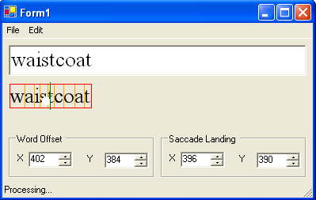

CharBreaker
This program takes a word (or group of words) and calculates on which letter a coordinate (usually a saccade landing point) falls on.
Download version 1.1.3 of CharBreaker
Assumptions
The program assumes several things about the text you are trying to break down.
- The word is centred on a given coordinate, which is adjustable using the x and y offsets.
- You have Microsoft Excel (or similar) to read in the generated comma separated variable (CSV) file, or the modified tab separated saccade report.
- Saved CSV files will appear in the same folder as the application itself.
- Processed saccade reports will appear in the same folder as the original saccade report.
- The program tries not to write over files you have previously created, it will apppend a number to the file you are trying to save, if the default filename file already exists
User Guide
- Double click the application.
- Pick Edit->Font... menu item to change the font being used.
- If your font is quite large, you may need to resize the program window.
- Type a word or phrase into the text box. There is a maxium of 32 characters allowed.
- As you type, under the text box should appear the same word(s) with the following features
- The red box defines the calculated area of the whole word
- The orange lines define the area of each letter (character - even spaces and punctuation have calculated areas
- The green line is the computed centre of the word(s). Letter positions are re-computed from the center of this line.
- The white circle represents the saccade landing point, if it falls within the area of the word(s)
- If you have a study where the screen position of the word(s) has been given, enter it into the offset boxes.
The position of each letter will be re-calculated using the given x and y values as representing the centre of the green line.
- If you have a saccade landing point, enter the x and y values into the saccade boxes.
Processing a saccade report
To process a saccade report file (a list of words, their centre coordinates and the saccade landing coordinates) and calculate with letter was hit, you need to generate a saccade report with the following variables:
- CURRENT_SAC_END_X - the X coordinate of the saccade landing point
- CURRENT_SAC_END_Y - the X coordinate of the saccade landing point
- words - the word that was displayed
- target_loc - the coordinate of the centre of the word. Here is a valid example: (292, 380)
The four variables can appear in any order in the report.
- Make sure you have picked the correct font and font size.
- Pick a file to process using the File->Process... menu item.
- The program will cycle through each word in the file calculate the letter that has been hit.
- The status bar at the bottom of the window will read "processing" while the calculations are being done. It will change to "Ready" once the file has been completely read.
- A new tab separated file will have been created that has the letter and leter number appended to each result line.
The CSV file
A CSV file can be generated about the current text from the File->Dump CSV menu. The CSV contains the following information:
- The word(s) and their overall width and height.
- The coordinate you gave to be used as the centre of the word.
- For each letter:
- character name
- left edge value
- bottom edge value
- right edge value
- top edge value
Screenshot
Here is a screenshot of the program processing a saccade report.

To Do
- Catch more file errors - for example if the file to process is already being read in Excel.
- Specify the headers to read from the report.
Version Log
Version 1.0 - Initial release
Version 1.1 - can now process saccade files
Version 1.1.1 - bug fix: incorrect letter indexing
Version 1.1.2 - built for .NET 10 and 1.1 (should run on Windows 2000 and up)
Version 1.1.3 - numeric input boxes can now take a larger range of values
CharBreaker v1.1 - Peter Phillips 13/06/2008